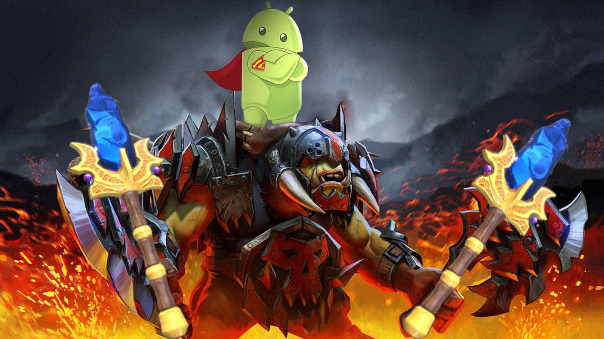

Alchemist rage replaced with his knowledge! Aghanim fusion released!

During the event, players that are playing with Kostyan and Boyaren are able receive a free Aghanim's scepter! How
does this work:
- Pick a hero with a strong Aghanim's scepter bonus, we highly recommend Dark Willow and Clinkz
- Alchemist goes for a position 3 but frees the lane for his support as soon as he gets his Radiance
- Don't suck at the midlane
- Try your best to make stacks
- Enjoy your scepter, but after the Dark Willow 😜
- After 2 scepters Alchemist buys his tank items and you go finish